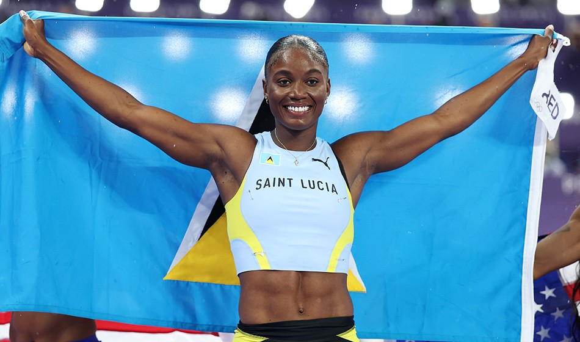
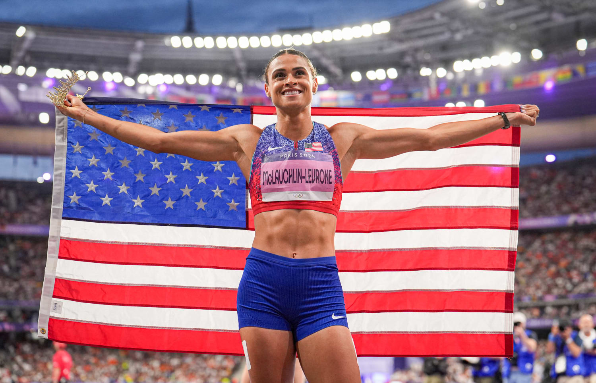
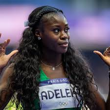

Ten Inspiring Athletes In Olympics 2024
Read Time :10 minutes
Last updated 23/08/2024
Written By Favour Izevbuwova
Favour,2024"The best thing to watch in Olympics is short distance run and relay!"
If there was one thing I would want to become in the next world,it would be an Athlete!The excitement that it brings to being able to represent your country but causing many all over the world to be united in sportmanship is absolutely incredible!A number of events takes place in the Olympics Games,every 4 years.There is an sport to always look forward to.But for me that will be track and field!
As Olympics has gained popularity,looking forward every four years for sportsmanship spirit
But if you ask what makes me watch Olympics,I would say short distance run and relay! The different personalities that come through whether they are personal favourites or villains,is a bonus!Can't lie it has definitely forced me to want to get to know my personal favs beyond the commentating.So I have decided to make a list on them,for you also get to know them.Though heads up not all on this list our athletics, so before you come for me I know!
As Olympics has gained popularity,looking forward every four years for sportsmanship
Favour Ofilli

Favour started out on track from a young age,so you can almost say it has been her natural talent.This has set out in her local championships to international level to representing Nigeria.
Even with her setback caused by Nigeria's administration for not registering for the women's 100m.It almost felt that the technical difficulties caused her years of training to go to waste.But thankfully, she still had the opportunity to compete in 200m and women's 4x100 relay.
Julien Alfred
Julien Alfred brought home to St Lucia their first medal in the Olympics in any sports and her first olympic medal! To earning herself to be the fastest woman in the world,with a time of 10.72s. Taking everyone by shock and herself!Definitely making herself to be an aspiring role model to young girls in St Lucia.
Sydney McLaughlin-Levrone
Very open about her Christian Faith on her socials and media publicity
Track and field has been what she has grew up around because it is in her family background.From her father nearly making the Olympics team, to her mother running on the boys track and her siblings too!
She has not only won a gold in the Paris Olympic Games 2024 but she has set the world record in 400m hurdles for women.She has continued to set the world record in this event at least six times!
Rhasidat Adeleke
 =From an early age Rhasidat was active in all kinds of sports a few to mention:Badmintion, volleyball and basketball.But she ultimately settled for athletics.
She holds the national record for Ireland both the short track & field indoor and outside events. Edging Ireland forward in the athletics.
This year,she has set her personal best record!
Femke Bol

Femke Bol is a verstile athlete both 400m hurdles/flat and relay.Know to be as the first woman ever to compete in both events.
She is a world and national record holder
Encouraged by her doctor to learn how to fall by getting into judo only to realise it wasn't for her.This is definitely proof that she was meant for track and field
Summer Mcintosh

Three time Olympic holder at the age of 15
Just from the age of 14 she was selected to represent Canada in Tokyo Olympics 2021
Her father Greg Mcintosh was also a swimmer,whilst her older sister comptetes in pair skating